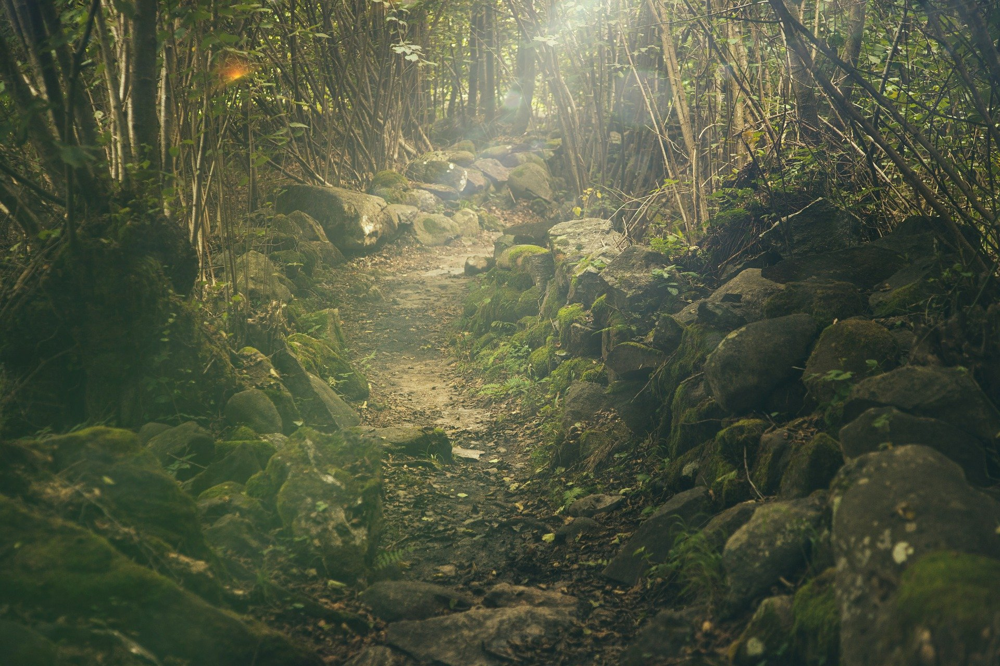
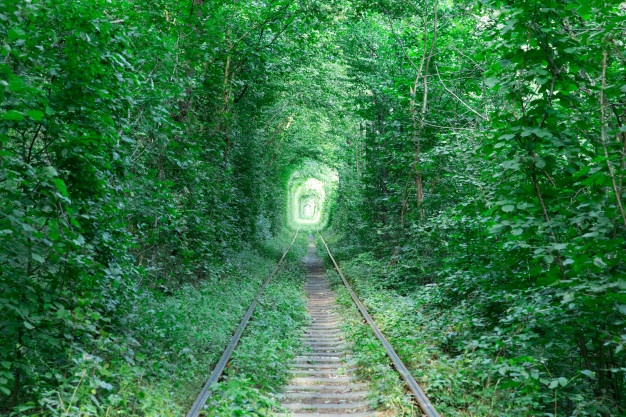
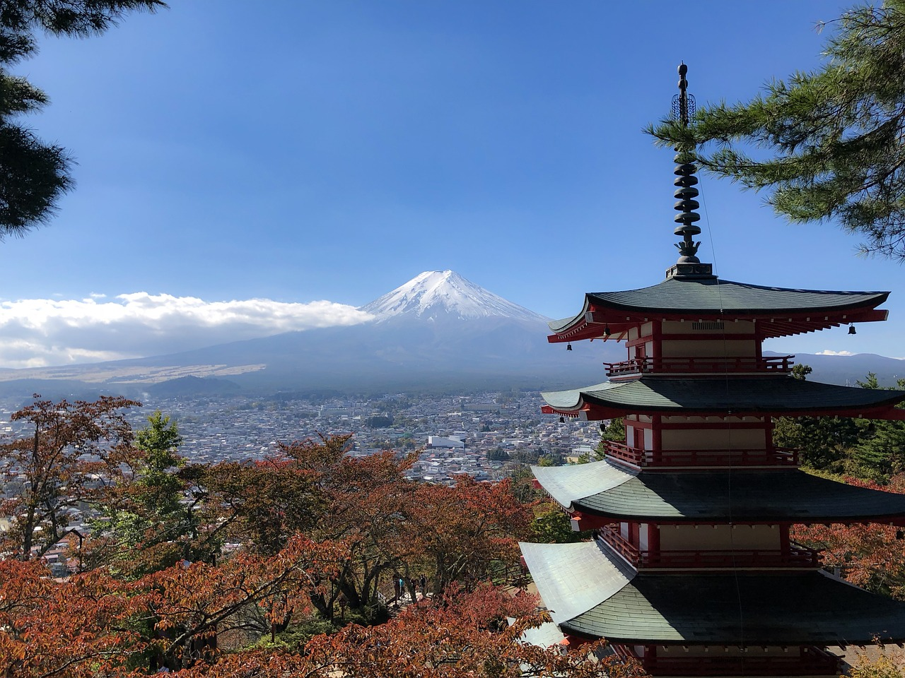

Tunnel of Love - Klevan(Ucrânia)

O Túnel do Amor é uma seção de ferrovia industrial localizada perto de Klevan, na Ucrânia, que o liga a Orzhiv. É uma ferrovia cercada por arcos verdes e tem de três a cinco quilômetros de comprimento. É conhecido por ser um lugar favorito para os casais passearem. A melhor época para visitar o "Túnel do Amor" ucraniano é no final da primavera e durante o verão, quando a folhagem está mais verde. Mas o auge do outuno, com as folhas em tons de amarelo e vermelho, e o inverno, com a pista coberta de neve, também rendem boas imagens. Confira informações mais detalhadas sobre estadias e como ter a melhor experiência clicando aqui.
Monte Fuji - Honshu(Japão)

Já imaginou estar a quase 4 km de altura? Saiba que isso é possível.
"Montanhas são poderosos símbolos, morada dos deuses onde os homens encontram o divino. O Monte Fuji, na fronteira das províncias de Shizuoka e Yamanashi, é um pouco mais que isso. É a própria imagem do Japão, reverenciada por mestres da pintura, poetas e músicos, impressa em imagens clássicas das xilogravuras ukiyo-e e admirada por dezenas de milhares de montanhistas que ascendem seus 3776 metros de altura todos os anos.
Tamanha devoção levou a Unesco a declará-la Patrimônio da Humanidade na categoria “cultural” em 2013, um forte indício do poder de suas formas e sua forte influência sobre a cultura japonesa. A série de pinturas produzidas por Katsushika Hokusai entre os séculos 18 e 19, conhecidas como As 36 Vistas do Monte Fuji, estão entre o melhor da produção iconográfica clássica do arquipélago.
Para o turista comum, há duas formas de conhecer este vulcão inativo desde 1707: contemplando suas formas simétricas de bem longe ou encarando a longa subida até sua cratera. apinhada de excursionistas durante o período oficial de escalada, sempre no verão, quando as neves de seu cume derretem."
Fonte: https://viagemeturismo.abril.com.br/atracao/monte-fuji/
Para visitar esse fabuloso lugar você poderá fazer o passeio com agências de turismo ou se preferir pode usar ônibus ou trem! Isso mesmo que você leu, veja mais detalhes abaixo:
Ônibus
A opção mais barata é seguir de ônibus de Tokyo para o Lago Kawaguchiko, pela Keio Dentetsu Bus, cuja passagem custa 3.500 ienes ida e volta.
O ônibus parte da estação de Shinjuku. Tomando o metrô desde o seu hotel, desça na Shinjuku Station. Para chegar ao Terminal Rodoviário Shinjuku Expressway, o novo portão sul (New South Gate) é o mais conveniente.
Pegue a escada rolante em frente ao portão de embarque (New South Gate) para chegar ao terminal de embarque no 4º andar. Da saída sul (South Exit), a rodoviária é acessível a partir do portão “Koshu-Kaido Gate”, por meio da passagem para pedestres em frente ao portão de embarque.
Trem
Já de trem, partindo de Tokyo da Estação Shinjuku, pegue a linha Chuo para a Estação Otsuki (1h de viagem) e, em seguida, mude para a linha Fuji Kyuko, descendo em Kawaguchi-ko (mais 1h de viagem).
A passagem para Otsuki custa 4.020 ienes ida e volta e aceita JR Pass. Já a linha Fuji-Kyuko até Kawaguchi-ko, custa 1.110 ienes cada trecho, não aceita JR Pass.

2020 MULTI VIAGENS - TODOS OS DIREITOS RESERVADOS